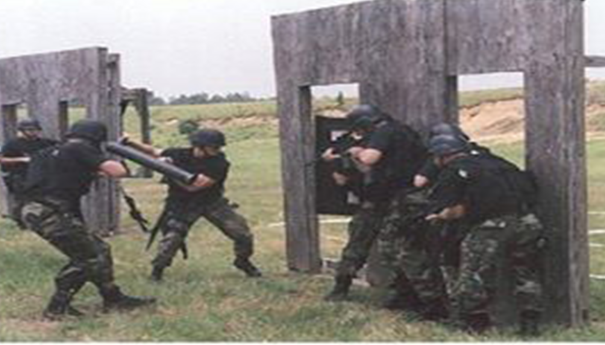

The LGOP Officer: When "Protect and Serve" Becomes "Hunt and Prosecute"
How Modern Policing Adopted Military Tactics—and Why Florida Citizens Are Treated Like Enemy Combatants
Published on by Attorney Jeff Lotter, Former State Trooper & Deputy Sheriff

You expect Officer Friendly. You get the Paratrooper.
Most Florida citizens approach a police encounter expecting professionalism, respect, and fairness. They believe in "protect and serve." They think the officer wants to help them.
They're wrong.
Modern American policing has quietly adopted a military operational model that fundamentally changes how officers view you, interact with you, and document encounters with you. It's called the LGOP Model—and understanding it might be the difference between walking away from a police encounter and spending the night in jail for a crime you didn't commit.
What is an LGOP?
Little Groups of Paratroopers is a military concept born from WWII airborne operations. When paratroopers jumped behind enemy lines during the invasion of Sicily in 1943, they scattered across hostile territory—isolated, lacking support, forced to operate autonomously.
The mission was simple: "March towards the sound of the guns and kill anyone not dressed like you."
LGOPs were characterized by three core principles:
- Simple, Unambiguous Mission – Clear objective, no need for constant supervision
- Decentralized Authority – Individual soldiers making significant tactical decisions without approval
- Aggressive Initiative – Trained to improvise, attack, and achieve the mission by any means necessary
This worked brilliantly for soldiers operating behind enemy lines.
The problem? Modern police departments train officers the exact same way—and you're the enemy territory.
The LGOP Police Officer: Scattered Across Enemy Lines
Police departments deploy patrol officers like paratroopers: scattered across geographic zones, operating with minimal supervision, expected to generate productivity (arrests, citations, stops) with significant autonomy.
The parallels are exact:
| WWII Paratrooper | Modern Patrol Officer |
|---|---|
| Dropped behind enemy lines | Deployed into high-crime zones |
| Minimal supervision | One supervisor per 10-15 officers |
| Mission: Find and engage the enemy | Mission: Generate stats (arrests/citations) |
| Autonomous tactical decisions | Discretion to stop, search, arrest |
| Rules of war are "flexible" | Constitutional rights are "interpreted" |
The fundamental shift is this: You are no longer a citizen to be protected. You are a target-rich environment to be exploited.
The Most Dangerous LGOP: The "Creative Writer"
Here's what you need to understand: The biggest threat isn't the obviously brutal "bad apple" officer you see on the news. Those officers get caught, get fired, generate lawsuits.
The real threat is the highly competent, legally armored LGOP officer who knows exactly how to bury unconstitutional conduct in 10 pages of perfectly written case law.
Profile of the Creative Writer
⚠️ RECOGNITION CHECKLIST
- ✓ Star Performer – Top arrest/citation numbers in the department
- ✓ Highly Intelligent – Knows case law better than most prosecutors
- ✓ Legally Armored – Every report is a masterclass in justification
- ✓ Tactically Aggressive – Pushes constitutional boundaries constantly
- ✓ Mission-Focused – Stats matter more than rights
- ✓ Creatively Accurate – Every word is technically true, but the narrative is fiction
This officer is not incompetent. He is not obviously brutal. He won't be caught by Internal Affairs because his reports look flawless. He won't be caught by prosecutors because his affidavits cite all the right case law.
But he will violate your rights—and you'll never know it happened until you're sitting in jail wondering how a "routine traffic stop" turned into a felony arrest.
How "Creative Writing" Turns Illegal Stops Into Constitutional Arrests
Let's break down how this works in practice. Here's a real-world scenario (details changed to protect client confidentiality):
SCENARIO: The "Lawful" Traffic Stop That Never Happened
What Actually Happened:
- Officer sees a vehicle leaving a bar at 1:30 AM
- Runs the tag—driver has a prior DUI from 3 years ago
- Follows the vehicle for 2 miles looking for any reason to stop
- Vehicle crosses the fog line by 6 inches for 1 second
- Officer initiates stop, smells alcohol, arrests for DUI
What the Arrest Report Says:
"While on routine patrol in the area of [redacted], I observed a silver sedan commit a traffic infraction in violation of Florida Statute 316.089(1) (failure to maintain a single lane). Based on my training and experience, I know this driving pattern is consistent with impaired operation of a motor vehicle. I initiated a traffic stop to investigate this violation. Upon making contact with the driver, I detected a strong odor of alcoholic beverage emanating from the vehicle. The driver exhibited bloodshot, watery eyes and slurred speech. Based on the totality of circumstances, I had probable cause to believe the driver was operating a vehicle while impaired..."
What's Missing From the Report:
- Officer targeted the vehicle before any infraction occurred
- Officer followed for 2 miles waiting for any mistake
- The "lane violation" was a momentary 6-inch deviation on an empty road at night
- The real reason for the stop was the prior DUI history, not the driving pattern
Is the report technically accurate? Yes. The vehicle did cross the fog line. The officer did detect an odor of alcohol. The driver's eyes were bloodshot.
Is the stop constitutional? Absolutely not. The officer engaged in pretextual enforcement—targeting a driver based on history, not observed criminal conduct—and manufactured reasonable suspicion after the decision to stop was already made.
But good luck proving it. The body camera shows a lawful stop. The report cites the correct statute. The prosecutor will never question it. And your public defender won't even know to look for it.
Why You're at a Devastating Tactical Disadvantage
When you encounter an LGOP-style officer, you're facing a trained adversary who has every advantage:
1. He Knows the Rules—You Don't
The average citizen has no idea what their Fourth Amendment rights actually protect. You think you have to answer questions. You think you have to consent to searches. You think refusing cooperation "makes you look guilty."
The officer knows you think this—and he will exploit it.
2. He Controls the Narrative—You're Just Reacting
From the moment the encounter begins, the officer is building a legal justification for whatever action he's already decided to take. Every question is designed to generate incriminating responses. Every observation is being filtered through a lens of suspicion.
You're trying to be helpful and polite. He's writing a probable cause affidavit in his head.
3. He Has Legal Armor—You Have Hope
Qualified immunity, the fellow officer rule, the "good faith" exception, officer safety doctrines, investigative detention standards—the officer is wrapped in layers of legal protection that allow him to make "mistakes" without consequence.
You have no such protection. One "mistake" on your part—one misunderstood question, one nervous gesture, one wrong word—and you're under arrest.
4. He Has Time and Numbers—You Have Neither
Police departments measure success in quantifiable metrics: arrests, citations, stops, seizures. The LGOP officer who generates numbers gets promoted, gets preferred assignments, gets accolades.
You are not a person. You are a stat.
And if you happen to be in the wrong place at the wrong time when he needs to hit his numbers? You're the mission.
How to Protect Yourself When You're in the Crosshairs
Understanding the LGOP model doesn't make you immune to aggressive policing. But it does give you a framework for protecting your rights during the encounter—and building a defense after.
During the Encounter: The Five Survival Rules
1. Comply Physically—Resist Legally
Do not physically resist or argue with the officer. Follow lawful commands. But do not waive your rights. "Officer, I do not consent to any searches. I am invoking my right to remain silent. I want to speak with an attorney."
2. Document Everything You Can
If it's safe to do so, record the encounter on your phone. Note badge numbers, patrol car numbers, exact time, exact location, witnesses. The officer's narrative will be crafted carefully—you need evidence to challenge it.
3. Say Nothing Incriminating
Every question is a trap. "Do you know why I stopped you?" is not a friendly conversation starter—it's an attempt to get you to admit to a violation. "Where are you coming from?" is not small talk—he's building reasonable suspicion for a search. Politely decline to answer.
4. Do Not Consent to Searches—Ever
"Do you have anything illegal in the car?" is not a genuine question—it's a request for consent to search. "I don't consent to any searches" is the only answer. If the officer searches anyway, do not resist—but repeat clearly that you do not consent.
5. Request Immediate Legal Representation
The moment the encounter escalates beyond a simple citation, invoke your right to counsel. Do not answer questions. Do not make statements. Do not try to "explain your way out of it." Call an attorney who understands LGOP tactics.
After the Arrest: How We Dismantle the Creative Narrative
If you've been arrested by an LGOP-style officer, the fight is far from over. In fact, it's just beginning—and this is where having an attorney who understands these tactics makes all the difference.
At Lotter Law, I don't just read the arrest report and accept it as truth. I've written those reports. I know exactly how the game is played. I know what to look for in the gaps, the inconsistencies, the "creative accuracies" that hide constitutional violations.
We Look for the Tripwires
Every Creative Writer leaves fingerprints. They have to—because they're trying to make an unconstitutional stop look lawful, and that requires narrative construction. We look for:
- Temporal Inconsistencies – When did the officer first decide to stop you vs. when the "violation" occurred?
- Pretextual Indicators – Did the officer run your tag before the alleged violation? Was there a long follow period before the stop?
- Boilerplate Language – Does the report use the exact same phrasing for every stop? That's not observation—that's template writing.
- Missing Context – What's NOT in the report? What would a truly neutral observer have included?
- Body Camera Gaps – Does the video match the written narrative? Are there convenient "technical issues" during critical moments?
We File the Motions Other Attorneys Won't
Suppressing evidence based on pretextual stops, demanding discovery that reveals the officer's statistical patterns, challenging the narrative inconsistencies that prosecutors ignore—these aren't standard public defender motions. These are the tools we use to dismantle the Creative Writer's armor.
Why Former Law Enforcement Matters
I served as both a Florida State Trooper and a Deputy Sheriff before becoming a criminal defense attorney. I was trained in the same academies, worked the same streets, and learned the same tactical doctrines as the officers who arrested you.
I know how LGOP officers think because I was trained to think the same way.
The difference is that I now use that knowledge to defend you—not to hunt you. I know what "creative writing" looks like because I've seen thousands of reports. I know what pretextual enforcement looks like because I've watched it happen. I know how to challenge the narrative because I know how it's constructed.
Most importantly, I know that you're not the enemy. You're a citizen whose rights were violated by an officer who forgot that his job is to protect and serve—not to hunt and prosecute.
If You've Been Arrested by an LGOP Officer, Time is Critical
The Creative Writer's narrative is being locked in right now—in supplemental reports, witness statements, evidence logs, and prosecutor briefings. Every day you wait is another day that narrative becomes "truth."
We need to act immediately to:
- Secure body camera footage before it's "accidentally" deleted
- Demand CAD (Computer Aided Dispatch) records showing when the officer first targeted you
- Obtain the officer's statistical history (arrest patterns, complaint history, training records)
- Identify witnesses and document the scene before memories fade
- File motions to suppress before the prosecution's case hardens
Related Resources
Understanding Your Rights
How Police Tactics Impact Your Case
Important Disclaimer:
This article is for educational purposes only and does not constitute legal advice. The views expressed are based on my experience as both a law enforcement officer and criminal defense attorney, and reflect observations about systemic tactical approaches—not accusations against individual officers.
The vast majority of law enforcement officers serve honorably and respect constitutional rights. This article addresses a specific tactical model that, when misapplied, can result in violations of citizen rights. If you have been arrested or charged with a crime, consult with an attorney immediately about your specific situation.
About the Author:
Attorney Jeff Lotter served as a Florida State Trooper and Deputy Sheriff before earning his law degree. His unique perspective combines operational law enforcement experience with constitutional criminal defense expertise, allowing him to identify tactical and procedural issues that other attorneys miss.